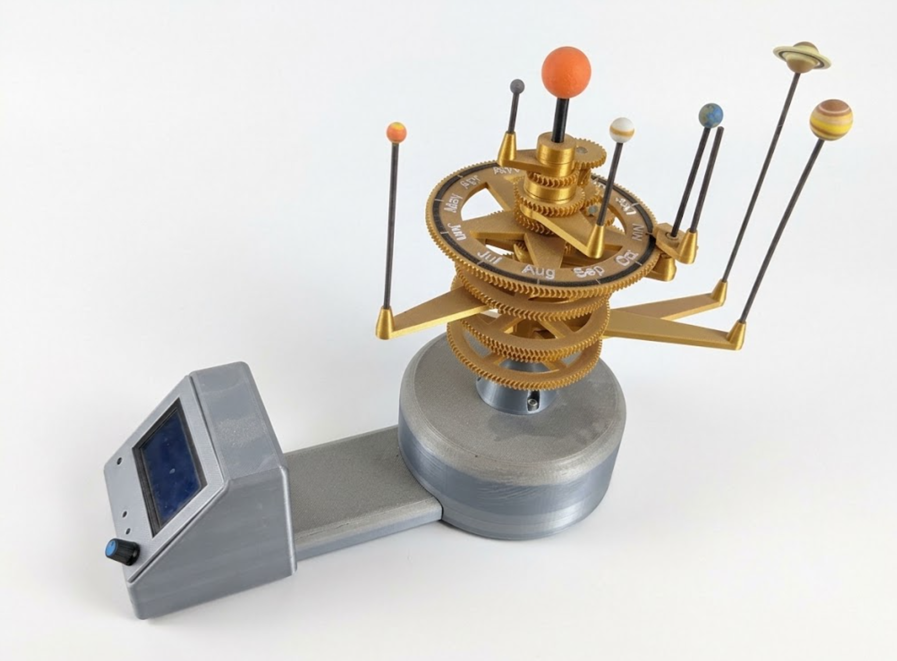
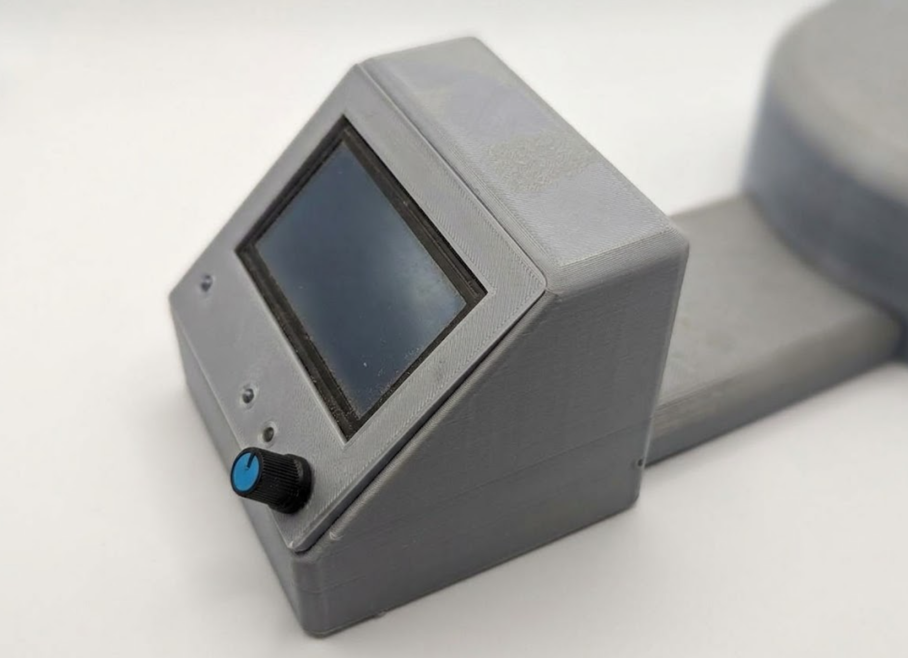
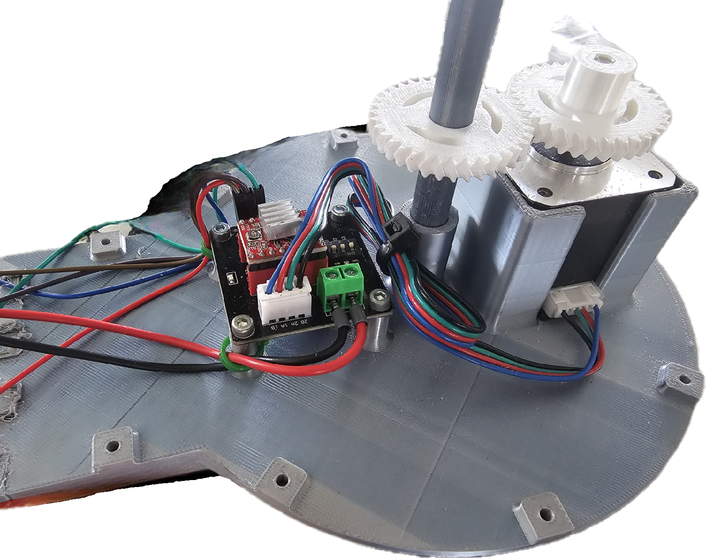

Orrery



Tekeningen
De orrery en de tandwielen heb ik gedownload van Thingiverse. De basis waar alle elektronische onderdelen in komen en de tandwielen die aan de motor hangen, heb ik zelf ontworpen. In totaal heb ik 12 onderdelen zelf getekend in Inventor.
Elektronica
Het project bevat de volgende componenten:
- een stappenmotor die alles laat draaien
- een ESP32 (programmeerbare microcontroller)
- een controlepaneel met lcd, zoemer en rotary encoder met drukknop, samen in één unit
- een omvormer (step-down converter)
De stappenmotor werkt op 12V en de ESP32 op 5V. Daarom zit er een omvormer in die de 12V DC omzet naar 5V DC voor de ESP32.
Programmeren
Ik programmeer het project in de Arduino IDE. Het programma leest de input van de gebruiker via de rotary encoder, toont informatie op de lcd en laat de stappenmotor draaien. Er zijn verschillende menuopties:
- de stand van de planeten bekijken op de huidige datum
- de stand van de planeten bekijken op een zelf ingegeven datum
- de simulatie vertragen of versnellen